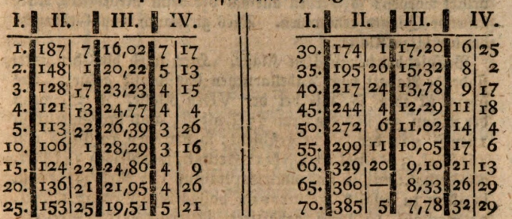
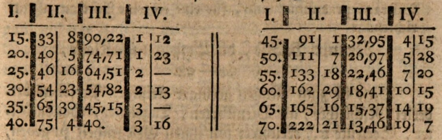

Uddrag af "Anordningen for den i Hamburg oprettede Almindelige Forsørgelsesanstalt. Anden Udgave, med forøgede og forbedrede Tabeller. Hamburg, 1779, 30 Sider og 30 Blade Tabeller.”
Ved at Tjenestefolkene ikke har deres lille Armod liggende i Kommoden, undgaar de tusinde Fristelser til at forspilde Pengene: thi før de hæver det igen fra Forsørgelsesanstalten, betænker de sig; og de opmuntres tillige ved Tanken om, at deres Skilling, som bliver liggende i Skuffen eller Lommetørklædet, om end lille, dog vokser i Anstalten og i Mellemtiden befinder sig i dens Hænder.
Ligeledes er Klassen for udsatte Livrenter, især paa Contributionsbasis, meget nyttig for allehaande Lærde og Kunstnere, som uden Embede lever nødtørftigt af deres flid, saa længe Aar og Kræfter støtter deres Virksomhed; men som, med tiltagende Alder og aftagende Styrke, om end de ikke nødvendigvis maa frygte Armod, dog med Rette ønsker at kunne leve med mindre anstrengende Arbejde.
Den følgende Uddrag skylder Læserne, sammen med mig, den højtærede Hr. Stiftsamtmand Oeder Tak for.
Første Klasse, nemlig Livrenterne, som straks bliver forfaldne. § 42–46 i Anordningen.
§. 42. I denne Klasse kan enhver, enten på sit eget eller en andens liv, indsætte et bestemt kapitalbeløb, for hvilket han modtager en livrente, passende til personens alder, som bliver ham sikret ved et livrentebrev, udstedt af de daværende direktører i hele forsørgelsesanstaltens navn.§. 43. Denne livrente begynder at løbe fra den dag, kontrakten indgås, og udbetales første gang ved den næstfølgende betalingstermin. Den varer livet igennem og ophører med dødsdagen for den person, på hvis liv den er tegnet; således at den sidste udbetaling ikke sker for et helt halvt år, men kun for tiden fra sidste termin indtil dødsdagen.Tabel for denne første klasse.


Kol. I angiver personens alder; Kol. II prisen for én portion à 30 mark eller 10 rigsdaler årlig pension, opført i mark og halve gylden; Kol. III udbyttet af indkøbsprisen i procenter.
F.eks. ønsker en 30-årig person en livsvarig livrente på 10 rigsdaler eller én portion: da er værdien for alder 30 år 549 mark og 7 sechlinge. Hertil kommer (§.30) yderligere 2 % til administrationsomkostninger, dvs. 11 mark. Det beløb, der således skal betales, er 566 mark og 7 sechlinge. Og udbyttet af indkøbsprisen er 5 7/100 procent.
Det bemærkes her, hvad angår denne såvel som alle øvrige tabeller (undtagen den 7., som hører til den IX. klasse), at beregningen ved deres udarbejdelse er sket ud fra en renteindtægt på 3 procent.
Anden Klasse af livrenter på to personers liv, §. 47–51.
Klassen for livrenter på to personers liv er for dem, som sammen med en anden person ønsker at oprette en livrente, og som vil nyde denne i fællesskab, så længe begge er i live; men som, efter den enes bortgang, helt overgår til den længstlevende, således at denne nyder den samme livrente indtil sin dødsdag, som de begge tidligere har delt.Livrenten (§. 49) begynder straks at løbe fra den dag, kontrakten indgås, og bliver første gang udbetalt ved den næstfølgende betalingstermin. Den er livsvarig og ophører ved dødsdagen for den længstlevende.Ved denne klasse bliver den foranstående første tabel forbundet med den følgende femte tabel på den måde, at man fra tabel I tager værdien af livrenten for den ene af de to personer – nemlig den yngre, hvis de er af forskellig alder – og betragter denne (yngre) person som forsørger for den anden (ældre); fra tabel V tages værdien af den afhængige pension, og denne værdi lægges til værdien af livrenten.F.eks. lad den ene person være 30, den anden 45 år gammel; livrenten være på 10 rigsdaler eller 1 portion. Livrenten for den 30-årige person koster ifølge tabel 1: 549 mark 7 sechlinge; pensionen for den 45-årige person, efter den 30-åriges død som forsørger, koster ifølge tabel V: 69 mark 23 sechlinge. Man lægger altså 549 mark 7 sechlinge og 69 mark 23 sechlinge sammen, hvilket giver 618 mark 30 sechlinge. Hertil lægges 12 mark 12 sechlinge i administrationsomkostninger (§. 30), hvilket giver i alt 631 mark 10 sechlinge pr. person. Disse to personer nyder altså omtrent 4,85 % af indkøbsprisen.
NB. Skulle også tre personer ønske at træde i lignende forbindelse, kan der gives nærmere oplysning herom i administrationskontoret. F.eks. hvis de tre personer er 49, 30 og 10 år gamle, så koster livrenten på 1 portion eller 10 rigsdaler årligt, som straks udbetales og opretholdes indtil dødsdagen for den længstlevende, 755 mark 7 sechlinge. Hertil lægges 2 % administrationsomkostninger, 15 mark 3 sechlinge, hvilket giver i alt 770 mark 10 sechlinge. Disse personer nyder altså 3,97 % af indkøbsprisen.
Tredje klasse af opsatte livrenter, §. 52–57.
Ved opsatte livrenter forstår man en sådan livrente, som ganske vist nydes af den person, der har sikret sig den, indtil enden af sit liv; men som ikke, som i 1ste klasse, begynder at løbe fra dagen for kontraktens indgåelse, men først udbetales og modtages efter udløbet af det i kontrakten fastsatte tidspunkt. Fordelen (§. 53), som indskyderen opnår ved hviletiden (dvs. den tid, hvor han slet ingen rente af sin indskudte kapital nyder), består deri, at han efter denne periodes udløb opnår en højere rente, end han ville få i 1ste klasse, hvor livrenten straks begynder at udbetales.Tabel for denne III. klasse.
Kolonne I angiver alderen. Kolonnerne II til VII angiver prisen på livrenten, nemlig kolonne II, hvis udbetalingen skal begynde efter 5 år; kolonne III, hvis den skal begynde efter 10 år osv.; med angivne procenter.
F.eks. en 30-årig person ønsker en livrente på 10 rigsdaler eller 1 portion årligt, som dog skal opsættes i 20 år, dvs. til efter det fyldte 50. år. For en 30-årig person, med udbetaling efter 20 år, angives prisen som 158 mark 9 sechlinge. Hertil lægges 2 % administrationsomkostninger, altså 3 mark 5 sechlinge; det samlede beløb, der skal betales, bliver dermed 161 mark 14 sechlinge. Udbyttet er 18,97 % af den betalte pris.
Er det en 27-årig person, tager man det rette gennemsnit mellem 183 mark 30 sechlinge ved 25 års alder efter 20 år, og 158 mark 9 sechlinge ved 30 års alder efter 20 år; idet man nemlig deler forskellen 25 mark 21 sechlinge i 5 dele, og fratrækker 2 af disse dele fra 183 mark 30 sechlinge. Resten, 173 mark 22 sechlinge, er da værdien af livrenten for en 27-årig person.
Er det en 33-årig person, tager man det rette gennemsnit mellem 158 mark 9 sechlinge og 131 mark 10 sechlinge ved 35 års alder efter 20 år.
Tabel for denne tredje klasse.

Fjerde klasse af de stigende livrenter, §. 58–62.
En stigende livrente er en sådan, som ganske vist udbetales til den person, i hvis navn den er tegnet, indtil vedkommendes dødsdag, og straks regnes som forfalden; men som dog i nogen tid skal hvile og tilbageholdes. Hviletiden forbliver dog ubestemt og kan efter ønske bringes til ophør; og de årlige renter, som forfalder i hviletiden, anvendes da til forøgelse af de senere livrenter.Denne klasse tjener især dem, som — enten på grund af skrøbelig helbredstilstand, fremskreden alder, eller deres erhverv og beskæftigelse — er udsat for større livsfare, end mennesker sædvanligvis ville være det efter naturens almindelige gang; og som derfor ikke kan optages som forsørgere i sjette, syvende og ottende klasse, men som ønsker at sikre en hustru, et barn, en slægtning eller lignende, efter deres død.
Den person (§. 60), som har erhvervet sig en stigende livrente, således som den er beskrevet i §. 58, og ikke længere ønsker at lade den henstå, må inden for de i §. 5 fastsatte terminer for optagelse melde sig og give Direktionen for denne forsørgelsesanstalt meddelelse om, at han herefter ønsker at hæve sin ham tilkommende livrente, tillige med det, som den i mellemtiden er vokset til.
Han afleverer da sit oprindeligt modtagne livrentebrev på den stigende livrente og modtager i stedet et nyt, på sædvanlig vis underskrevet, hvori den livrente, sådan som den på det tidspunkt er vokset til, udtrykkeligt angives.
Tab. III* til 4de Klasse. For eksempel: En 30-årig person, som ifølge den første tabel har betalt i alt 560 mark 7 sechsel for en straks forfalden livrente af 1 portion eller 10 rigsdaler årligt, men lader denne henstå i 20 år, modtager derefter 104 mark 3 sechsel årligt til sin død.Man kan også sikre sig en fremtidig livsvarig livrente på contributionsbasis, ved hjælp af en halvårlig indbetaling på 5 rigsdaler eller 15 mark, ifølge følgende tabel …For eksempel: En 40-årig person betaler straks 15 mark og fortsætter med dette halvårligt i 20 år, altså indtil det 60. leveår: da modtager vedkommende årligt 112 mark 31 sechsel til sin død.Administrationsomkostningerne forudbetales for 5 år og udgør 3 mark.
*Tabellerne selv kan ikke trykkes her, men man henviser i den henseende til ovennævnte hovedskrift; desto mere, da alle disse tabeller kun gælder for de svært rige lande, hvor rentefoden kun er 3 procent, det vil sige, kun for en uendelig lille del af vort tyske fædreland.
Femte klasse: De ophørende livrenter. § 63–66.
Disse ophørende livrenter er til dem, hvis pension skal ophøre med det fyldte 25. leveår. De er indrettet til fordel for sådanne forældreløse, for hvem der ikke under forældrenes levetid blev købt en tilstrækkelig forældreløsepension i den dertil bestemte ottende klasse; og for hvem der, når deres formue alene ikke kaster tilstrækkelig rente af sig, bedst kan hjælpes ved, at en del af denne formue anvendes til at sikre dem en hensigtsmæssig og mere rigelig understøttelse i de år, hvor det gælder at skabe sig en livslang stilling, end det ellers ville være muligt.F.eks. ønskes der for et femårigt barn en ophørende livrente på 10 Rdl. årligt (eller én portion): prisen er da 396 Mk. 14 Sk. Hertil kommer 2 % i administrationsomkostninger, 7 Mk. 30 Sk., hvilket giver en samlet sum på 404 Mk. 14 Sk. Livrenten udgør da 7,56 % af indkøbsprisen.
Sjette klasse – afhængige pensionister generelt (§ 67–78)
I klassen for afhængige pensioner hører alle dem til, hvis pension ganske vist skal udbetales livsvarigt, men først bliver udbetalt efter, at en forsørger er afgået ved døden. I denne, som er en af de vigtigste og talrigste klasser, hører alle dem til, som ønsker at sikre en anden person en livsvarig pension efter deres død – hvad enten det er en mand for sin hustru, en hustru for sin mand, forældre for deres børn, børn for deres forældre, søskende for søskende, venner for venner eller arbejdsgiver for tjener eller klient – uden hensyn til køn på hverken forsørgeren eller den forsørgede.Den person (§ 68), som indbetaler en bestemt sum, enten som engangsbeløb (kapital) eller via løbende bidrag (contribution), til forsørgelsesanstalten med det formål, at en anden bestemt person efter hans eller hendes død skal modtage en tilsvarende livsvarig pension, kaldes "forsørger". Den person, som efter forsørgerens død får pensionen, kaldes "den forsørgede".
Ligesom enhver i denne klasse kan være forsørger for en anden, kan også den forsørgede selv blive forsørger for sin forsørger; to personer kan således sikre hinanden gensidige livsvarige pensioner, således at den længstlevende altid modtager en pension.
Ægtemænd kan godt sikre deres hustruer under denne klasse (og ikke nødvendigvis i den følgende syvende klasse), men de opnår da ikke den rabat, der er nævnt i § 82. Til gengæld udbetales pensionen uforandret, selv om enken gifter sig igen.
Alle pensioner i denne klasse begynder at løbe med dødsdagen for forsørgeren, og første udbetaling sker ved det førstkommende regulære udbetalingsterminstidspunkt. Pensionen ophører med dødsdagen for den forsørgede, hvorved kontrakten med forsørgelsesanstalten ophører fuldstændigt.
Personer, som lever under særlig livsfare – såsom udenlandske militærpersoner og søfarende, eller dem som pga. erhverv opholder sig meget på vandet eller i farlige omgivelser – kan ikke optages som forsørgere i denne klasse. De må i stedet sikre deres pårørende i fjerde klasse.
Hvis nogen blot foretager en enkelt sørejse og ikke oplyser dette, men omkommer, behandles det som i § 23.
Selvom man i denne og i syvende og ottende klasse kan vælge mellem kapital- og contributionsordning, er denne valgmulighed begrænset, hvis aldersforskellen mellem forsørger og forsørget er for stor. I sådanne tilfælde er det markeret med en vandret streg i tabellen, hvor contributionsmuligheden ikke tillades.
Bidragsordninger i denne klasse betales altid forud, og en ny deltager skal første gang betale for to terminer samtidigt. Dog krediteres det beløb, der vedrører anden termin, til senere. Dermed skal man ikke betale ved anden termin, men betaler derefter ved tredje og alle følgende terminer. Dør forsørgeren inden da, tilfalder det allerede indbetalte beløb anstalten.
Syvende Klasse, især Enkepensioner §. 78-90.
Den pension, der her forsikres til en enke, er ligesom andre afhængige pensioner livsvarig. Dog ophører den, hvis enken indgår nyt ægteskab, til fordel for forsikringsanstalten, fra bryllupsdagen af, og pensionen holdes tilbage, så længe det nye ægteskab varer.Hvis enken imidlertid overlever sin nye ægtefælle og igen bliver enke, genoptages pensionen fra den første ægtefælles dødsdag – uden at det kræves, at den nye eller tidligere afdøde ægtefælle skulle have indbetalt noget ekstra. Undtagelsen er, hvis en højere pension er blevet aftalt.
Desuden udbetales ved det førstkommende termin efter bryllupsdagen en ekstra sum svarende til én års pension som en slags bryllupsgave. Denne udbetaling sker dog med den betingelse, at hvis den nye ægtefælle dør inden for ét år, modregnes pensionen for denne periode som allerede udbetalt.
I betragtning af de besparelser, som kassen kan forvente ved enkers genægteskab (idet pensionen i så fald ophører), tillades ægtemændene en særlig rabat på deres indskud eller løbende bidrag.
Tabellen gælder i øvrigt både for enker og for andre afhængige, livsvarige pensionister — dog med forbehold for, at rabatten kan justeres (udvides eller indskrænkes), efterhånden som erfaringerne med genægteskabets økonomiske virkning viser sig.
Denne rabat gælder ikke for det obligatoriske bidrag til administrationsomkostninger.
I betragtning af den besparelse, som for Cassen kan ventes ved bortfaldet af pensioner til gengifte enker, tillades ægtemændene en her fastsat nedsættelse i de foreskrevne indskud eller contributioner. Tabellen angiver i øvrigt såvel for enker som for andre afhængige livsvarige pensionister; dog med forbehold for, at nedsættelsen udvides eller indskrænkes i forhold til, hvad besparelsen i anledning af gengiftermål fremtidig måtte vise.
Denne nedsættelse omfatter i øvrigt ikke det foreskrevne bidrag til administrationsomkostningerne.
For det første fastsættes denne nedsættelse herved til 12 Procent af indskuddet eller contributionen: dog kun for de første ægtemænd, som inden for et års frist tiltræder denne indretning, samt for de kommende ægtemænd, som ikke udskyder deres tiltrædelse mere end ét år efter vielsen, og som i den anledning fremviser en gyldig vielsesattest; dog kun, når den bestilte pension højst udgør 10 portioner.
I skilsmissetilfælde forbliver, uden at indlade sig på, om kvinden er den skyldige eller uskyldige part, den fraskilte kvinde til enhver tid sin ret til pensionen, efter hendes fraskilte mands død, uindskrænket forbeholdt.
Kun er hun da også, dersom manden er optaget på contributionsfod, forpligtet til at betale contributionen indtil hans død.
Er hun ikke formuende, så tilstås hende den udvej, som er beskrevet i § 22.
Nu følger 17 tabeller over "Pensionistens alder, 1 år til 70 år." Her er 2 til prøve:
Pensionistens alder, 1 år

Pensionistens alder: 35 år

Kolonne I indeholder forsørgerens alder;Kolonne II indskuddet efter kapitalprincip;Kolonne III forholdet mellem pensionen og indskuddet i procent;Kolonne IV halvårlig ydelse efter contributionsprincip.
I selve opstillingen er denne tabel udført for alle kombinationer af pensionistens og forsørgerens alder.
Eksempel i den syvende klasse.En 35-årig forsørger bestemmer, at der efter hans død skal tilkomme hans 25-årige pensionist en livsvarig pension af vilkårligt antal portioner.For 1 portion à 10 rdl. udgør indskuddet efter kapitalfod 161 mark 3 sechsel eller den halvårlige contribution 5 mark 24 sechsel samt 3 mark 7 sechsel til 2 procent administrationsomkostninger.
Således skal der enten betales 164 mark 10 sechsel én gang for alle,eller – hvis contributionsfoden vælges – betales i de to første terminer, inklusive administrationsomkostninger, 14 mark 23 sechsel,og fra den tredje termin og fremadrettet 5 mark 24 sechsel halvårligt.
Pensionen udgør 18 62/100 procent af indskuddet efter kapitalfod.
Hvis en forsørger er yngre, end det i denne tabel er angivet i forhold til sin pensionist, så anvendes altid de beløb (quanta), som står anført for den laveste alder. Dette gælder også ved brugen af tabellen i anden klasse.
Eksempel i den syvende klasse.Her fratrækkes blot den stedfindende rabat fra det tabellariske indskud; det øvrige forholder sig på samme måde som i den sjette klasse.F.eks. hvis manden er 35 og kvinden 25 år gammel; og indtrædelsen sker i det første år efter vielsen: så udgør 12 procent af 161 mark 3 sechsel= 19 mark 11 sechsel, og der bliver tilbage 141 mark 24 sechsel;altså skal der efter kapitalfod betales 144 mark 31 sechsel i alt.
Eller: af den halvårlige ydelse 5 mark 24 sechsel, fratrækkes 12 procent i rabat, hvilket giver 5 mark 2 sechsel;således at der første gang betales 13 mark 11 sechsel, og fra den tredje termin og frem 5 mark 2 sechsel hver halve år, på contributionsfod, for én enkelt portion.
Da man dog hidtil ikke har haft tilstrækkelig erfaring med hensyn til besparelsen ved enkers fornyede giftermål,vil man fremover – i henhold til forbeholdet i § 81 – for hver ny optagelse oplyse, hvilken rabat der, i forhold til alder og omstændigheder, vil kunne nydes;og den pågældende får da, ifølge § 71, valget mellem at træde ind i den syvende klasse, hvor pensionen indstilles under enkers andet og senere ægteskab,eller i den sjette klasse, hvor pensionen uafbrudt udbetales livsvarigt.
Ottende klasse, nemlig: Forældreløses klasse, § 91–98
I denne klasse hører mindreårige hjemme, for hvem der – i tilfælde af at de bliver forældreløse, eller ved deres forsørgers død – bliver sikret en pension, som begynder ved forsørgerens død og ophører igen, når den mindreårige fylder det 25. år. Det er uden betydning, om forsørgeren er far, mor eller en anden person – pensionen begynder med forsørgerens dødsfald. F.eks.Pensionistens alder, 5 år

Indretningen af denne tabel er som ved den forrige. Den, der i denne klasse vælger contributionsfoden, deponerer til sikkerhed for de fremtidige bidrag en tredjedel af sin fremtidige årlige pension, dvs. 10 mark pr. portion.
F.eks. bestemmer en 40-årig forsørger en forældrepension for et 5-årigt barn af vilkårligt antal portioner: så er indskuddet for én enkelt portion på 10 rigsdaler årligt, 75 mark og 4 sekslinge efter kapitalfoden, eller 3 mark og 16 sekslinge som halvårligt bidrag, og 1 mark og 16 sekslinge som administrationsomkostninger. I første tilfælde, altså efter kapitalfoden, skal der i alt betales 76 mark og 20 sekslinge, og pensionen udgør 40 procent af indskuddet. Efter contributionsfoden beløber de to første terminer sig til 7 mark; dertil kommer deponeringsbeløbet på 10 mark og 1 mark og 16 sekslinge i administrationsomkostninger — i alt 18 mark og 16 sekslinge, som skal betales straks ved optagelsen. Ved den tredje termin osv. betales 3 mark og 16 sekslinge. Hvis begge lever til det 25. år af pensionsalderen, skal den sidste termin ikke betales; men hvis bidragene ikke er betalt inden da, tilbagebetales det deponerede beløb med renter.
Da der her og i Tabel IV bestemmes en halvårlig pension, som varer indtil en vis alder, kan der også til et bestemt formål kræves en kapitaludbetaling på én gang ved en given alder, og indskuddet kan udvides tilsvarende.
Her følger en tabel for en brude- og medgiftsklasse. For eksempel: for et 3-årigt barn, når det fylder det 15. leveår, udbetales en brude- eller medgiftsportion på et vilkårligt antal portioner (op til 40). Prisen for en enkelt portion på 10 rdl. er efter kapitalgrundlag 17 mark 12 skilling eller efter bidragsgrundlag 1 mark halvårligt. Administrationsomkostningerne på 2 % udgør 11 skilling. Man skal altså enten betale 17 mark 23 skilling på én gang, eller efter bidragsmodellen først 1 mark 11 skilling, og derefter for hver halve år 1 mark i forudbetalt bidrag pr. portion.
Niende klasse: Opsparingsklassen, §. 94–98
Denne klasse er oprettet til gavn for mindre bemidlede, flittige personer af begge køn, såsom tjenestefolk, daglejere, arbejdere, søfolk m.fl., for at give dem mulighed for, selv med små beløb, at lægge noget til side og anbringe deres møjsommeligt erhvervede nød- og medgiftspenge sikkert med nogen rente; hvorved man håber, at denne tilvejebragte bekvemmelighed vil kunne tjene dem som en opmuntring til ved flid og sparsommelighed at blive nyttige og vigtige for staten.Den dertil hørende VII. tabel viser kapitalens tilvækst ved hjælp af pålagte enkle årlige renter på 2 1/2 procent.
Tiende Klasse – Begravelsesklassen, §§ 99–114.
Denne klasse er oprettet til gavn for de personer, som ønsker at sikre og have vished for, at der ved deres død ikke vil mangle et bestemt beløb til en anstændig begravelse.For eksempel: En 40-årig person bestemmer et vilkårligt antal portioner til sin begravelse. For én portion på 10 rigsdaler er prisen 16 mark og 21 skilling. De 2 % administrationsomkostninger udgør 11 skilling. I alt 17 mark. Efter contributionsfoden er det halvårlige bidrag 18 skilling; første gang skal der altså for 3 terminer, inklusive administrationsomkostninger, betales 2 mark og 8 skilling, og fra 4. termin og fremefter skal der hver halve år betales 18 skilling pr. enkelt portion à 10 rigsdaler. Personer over 50 år kan kun indtræde efter kapitalfoden.